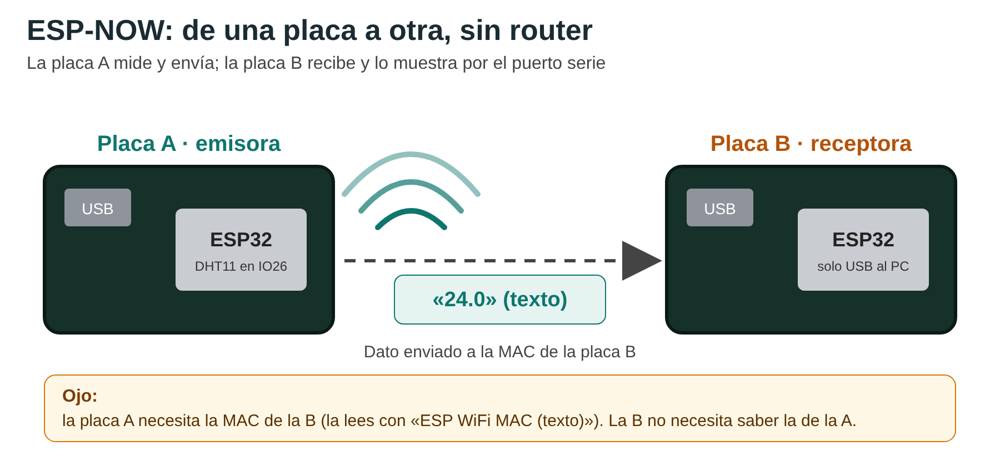
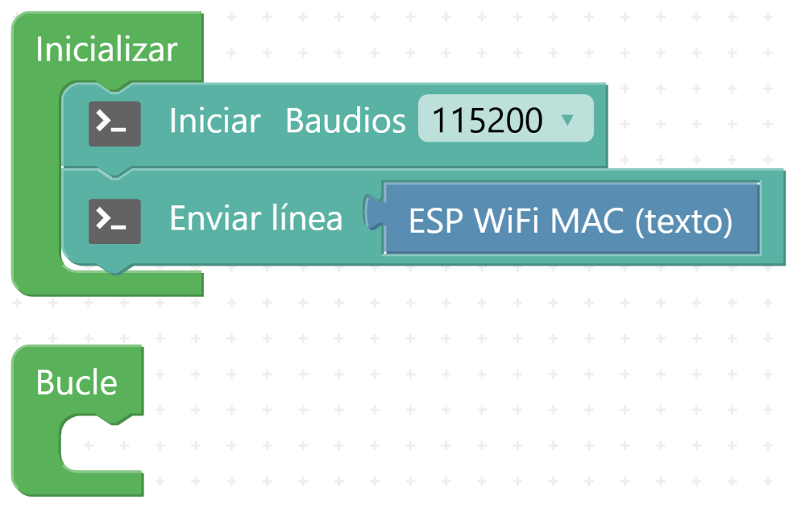
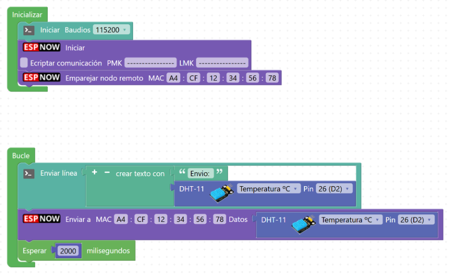
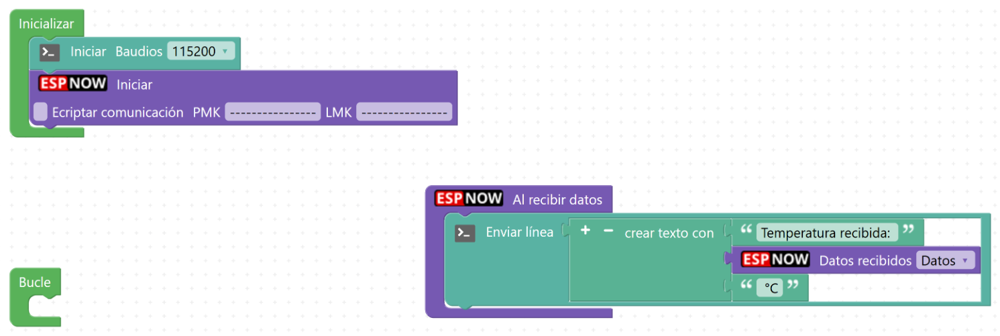
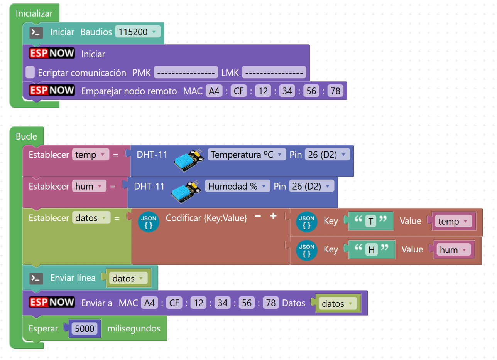
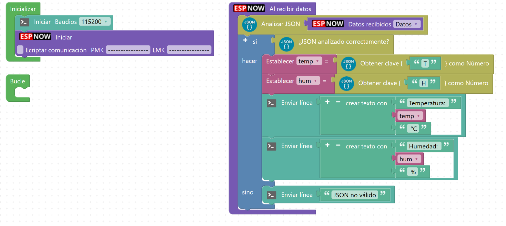
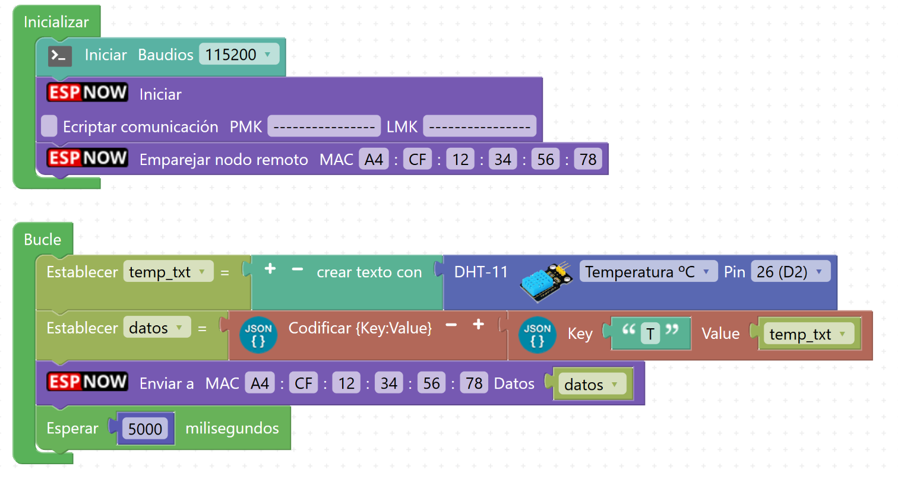

N4 Placas que hablan (ESP-NOW)
Dos placas pueden comunicarse sin router ni red Wi-Fi. Una mide la temperatura con un DHT11 y la envía; la otra la recibe y la muestra. Es el primer paso hacia sistemas con varios nodos, como los que verás después con la placa de inteligencia artificial.
🧠 Cómo funciona
ESP-NOW es un protocolo de Espressif, el fabricante del ESP32, que permite que dos placas se manden mensajes directamente, sin router ni red Wi-Fi de por medio. Cada placa se identifica con su dirección MAC: la emisora envía el mensaje «a la MAC» de la receptora.

Esto lo hace muy útil para montajes con varias placas separadas: una puede medir en el patio y otra mostrar el dato en el aula, sin depender de la red del centro. Como no se conecta a «AndaRed IoT», tampoco hace falta dar de alta su MAC en la red.
Objetivos
- Explicar qué diferencia hay entre ESP-NOW y un servidor web.
- Leer la MAC de una placa y emparejarla con otra.
- Enviar la lectura de un sensor de una placa a otra y recibirla.
- Razonar qué límites tiene la comunicación: alcance, pérdida de mensajes y seguridad.
Trabajad por parejas de placas: cada grupo tiene dos, una A y otra B.
🔍 P1 · La MAC del receptor
Conecta la placa B (la receptora) al ordenador y lee su MAC con el mismo programa que usaste en N3.

- Sube el programa a la placa B y abre la consola.
- Anota la MAC, que tiene seis grupos de dos cifras, por ejemplo
A4:CF:12:34:56:78(ejemplo inventado). - Rotula la placa con «B» y su MAC, para no confundirla con la de otro grupo.
📤 P2 · La placa A mide y envía
Situación. Una placa debe medir la temperatura del aula y mandársela a la otra, que está en otro sitio, sin pasar por ningún router.
1 · Esquema de conexiones

🛠️ Montaje y puesta en marcha
- Con la placa A desenchufada, monta el DHT11 como en el esquema y revisa con la lista de comprobación.
- Construye el programa de abajo y sustituye la MAC del ejemplo por la de tu placa B.
- Sube el programa a la placa A y abre la consola: debe aparecer la temperatura cada dos segundos.
2 · Programa de la placa A

Tres pasos: iniciar ESP-NOW, emparejar la MAC de la placa B y enviar el dato. El bloque de envío pide la MAC en seis casillas, una por cada grupo de cifras, y el dato que mandas. Se envía cada dos segundos: más deprisa no tiene sentido con un DHT11.
📥 P3 · La placa B recibe
Ahora la placa B, conectada al ordenador, recibe el dato y lo muestra por la consola.

El bloque «Al recibir datos» es un bloque aparte: no va dentro de Inicializar ni del Bucle. Se ejecuta él solo cada vez que llega un mensaje, y «Datos recibidos» contiene el texto que mandó la placa A.
🛠️ Comprobar que funciona
- Sube el programa a la placa B y déjala conectada al ordenador con la consola abierta.
- Alimenta la placa A (con un cargador USB o con el otro ordenador) y comprueba que aparece «Temperatura recibida» cada dos segundos.
- Aleja las placas y tapa el sensor de la A con la mano: la medida debe cambiar.
Retos
Otro ritmo
Cambia el tiempo entre envíos y mira qué ocurre en la consola de la placa B. Anota a partir de qué ritmo empiezan a verse lecturas repetidas.
Alarma remota
Haz que la placa B encienda un LED o un zumbador cuando la temperatura recibida pase de un umbral. Pista: el dato llega como texto y hay que convertirlo en número antes de compararlo.
Un solo mensaje
Haz primero la práctica P4 y usa también la humedad recibida en la alarma: por ejemplo, que suene el zumbador solo si hay mucho calor y poca humedad.
Entrega en el porfolio: foto de las dos placas rotuladas con la MAC de la B, captura de la consola de la B con varias lecturas, el programa de la A y el de la B, y el reto que hayas hecho.
🧩 P4 · Qué viaja por el aire: texto, números y JSON
Hasta aquí la placa A mandaba un solo número. ¿Y si quieres enviar la temperatura, la humedad y el nombre de tu grupo? Antes de programarlo hay que saber cómo viaja un mensaje, porque es la causa más frecuente de que «en la otra placa no se vea nada».
Qué viaja por el aire
- El bloque «Enviar a MAC» convierte lo que le des en un texto y manda esos caracteres, hasta un máximo de 250.
- En la placa B, «Datos recibidos» es siempre un texto, aunque lo que enviaste fuese un número.
- Un número suelto llega bien, pero con dos decimales como mucho (por ejemplo,
26.20), y hay que tratarlo como número en la B cuando quieras comparar o calcular con él. - Para mandar varios datos a la vez hay que ponerles nombre y orden. Eso es lo que hace el formato JSON.
{"T":26.2,"H":56}. La clave es el nombre del dato y el valor, el dato. Las comillas importan: un valor entre comillas es un texto; sin comillas, es un número.1 · La placa A empaqueta los datos
La placa A mide la temperatura y la humedad, las guarda en dos variables, las empaqueta con «Codificar {Key:Value}» (una pareja por dato) y envía el paquete. Las dos variables son numéricas y la variable datos es de texto.

2 · La placa B desempaqueta
La placa B abre el paquete con «Analizar JSON», comprueba que ha llegado bien y saca cada dato por su clave, diciendo de qué tipo es.

La regla de los tipos
| Cómo lo mandas | Cómo viaja | Cómo lo lees en la B |
|---|---|---|
| Variable o bloque numérico | {"T":26.2} (sin comillas) | «como Número»: correcto |
| Variable o bloque de texto | {"T":"26.2"} (con comillas) | «como Texto»: correcto. «como Número»: devuelve 0 |
🧪 Pruébalo: provoca el error a propósito
- Monta en la placa A el programa de la figura: convierte la temperatura en texto con «crear texto con» antes de meterla en el JSON.
- Deja el programa de la B como estaba y mira la consola: la temperatura aparece como 0.
- Razona por qué ocurre, comparando el mensaje
{"T":"26.2"}con{"T":26.2}. - Arréglalo de dos maneras: dejando de convertir a texto en la A, o leyendo como Texto en la B.

Retos
Una clave más
Añade en el emisor una tercera clave, «ID», con el nombre de tu grupo (un texto), y muéstrala en la consola de la B.
Orden remota
Haz que la B encienda el LED si la humedad recibida supera el 60 %. Pista: compara el número, no el texto.
Avisa si falla
Haz que la B escriba «JSON no válido» si el mensaje llega mal. Prueba a mandar a mano un texto sin llaves.
Entrega en el porfolio: los dos programas, una captura de la consola de la B con temperatura y humedad, y la captura del error provocado con tu explicación.
📏 Pruebas y límites
Una comunicación se evalúa midiendo, no suponiendo. La confirmación de envío del bloque «Comprobar si el último envío ha sido correcto» solo indica que el mensaje llegó a nivel de radio; Espressif aclara que no garantiza que el programa de la otra placa lo haya recibido. Con las dos placas funcionando haz estas pruebas y anota los resultados en una tabla:
| Prueba | Condiciones | Mensajes enviados | Mensajes recibidos | Observaciones |
|---|---|---|---|---|
- Distancia. Aleja la placa A por el aula y el pasillo.
- Obstáculos. Interpón una pared o una puerta metálica.
- Interferencias. Repite la prueba con otros grupos probando a la vez.
Los resultados dependen del aula y del momento: no hay un alcance «oficial» que puedas dar por bueno sin medirlo. Un envío sin respuesta tampoco garantiza que el mensaje llegara: por eso, cuando importa, se añade un acuse de recibo.
🔒 Seguridad y límites
Por defecto, ESP-NOW no cifra los mensajes: cualquiera con otra placa y cerca de la tuya puede leer lo que envías e incluso enviarle mensajes falsos a la receptora si conoce su MAC. En un termómetro del aula no tiene importancia, pero sí si el mensaje fuese una orden. El bloque «Iniciar» tiene la opción «Encriptar comunicación» con dos claves (PMK y LMK) que añade cifrado, pero exige poner las mismas claves en las dos placas y, además, emparejar también la placa emisora en la receptora, aunque el envío sea en un solo sentido.
Para razonar: ¿qué pasaría si un compañero de otro grupo tuviese la MAC de tu receptora y enviase un mensaje? ¿Y si el mensaje encendiese un motor?
📓 Qué anotar en el porfolio
- La MAC de la placa B y cómo la obtuviste.
- Una captura de la consola de la B con varias lecturas.
- La tabla de pruebas de distancia y obstáculos, con una conclusión.
- Un fallo que tuvisteis y cómo lo localizasteis (por ejemplo, el valor que llegó como 0 por un error de tipo).
- Una diferencia entre ESP-NOW y el servidor web de N3, con un ejemplo de cuándo usarías cada uno.
✅ Comprueba lo que has aprendido
1. ¿Qué necesita la placa emisora para mandar un mensaje a otra con ESP-NOW?
2. Tienes dos placas, A (emisora) y B (receptora). ¿En qué placa escribes la MAC de la B?
3. ¿Hay que dar de alta la MAC de las placas en «AndaRed IoT» para usar ESP-NOW?
4. El bloque «Al recibir datos» de la placa B…
5. ¿Qué riesgo tiene mandar una orden con ESP-NOW sin cifrar?
6. ¿Cómo viaja por ESP-NOW la lectura de un sensor?
7. El emisor manda {"T":"26.2"} y el receptor lee «T» como Número. ¿Qué muestra?